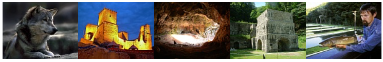
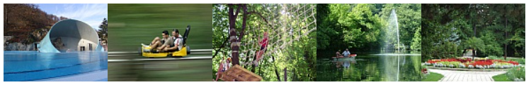

Látnivalók a közelben
Fedezze fel a környék legjobb látnivalóit és programjait, amelyek csak egy karnyújtásnyira találhatók a szállodától.

Látnivalók, programok a szálloda közelében:
Hámori Mászópark, Kohászati Múzeum, Szeleta-Barlang, Miskolci Állatkert, Diósgyőri vár és várfürdő, lillafüredi pisztrángos, újmassai őskohó, szentléleki pálos kolostorrom, Bánkút Síklub.
Látnivalók, programok Lillafüreden (1 km):
Hámori tó, Palota szálló, Szinva-patak vízesés, Anna-mésztufabarlang, Szent Isván-cseppkőbarlang, erdei kisvonat.
Látnivalók, programok Miskolc-Tapolcán (17 km):
Barlangfürdő ( termálfürdő ), bobpálya, kalandtúrapark, csónakázó tó és park